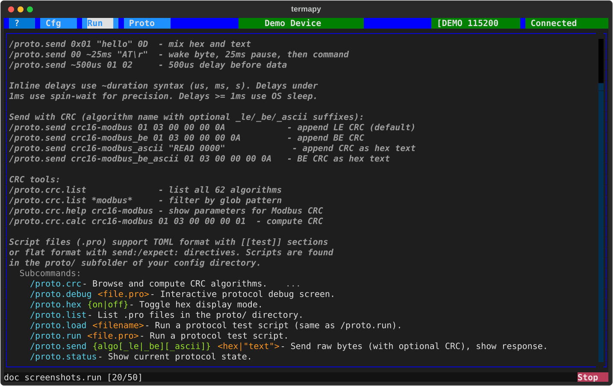
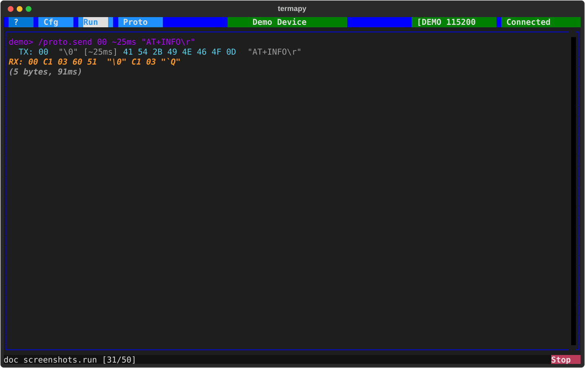
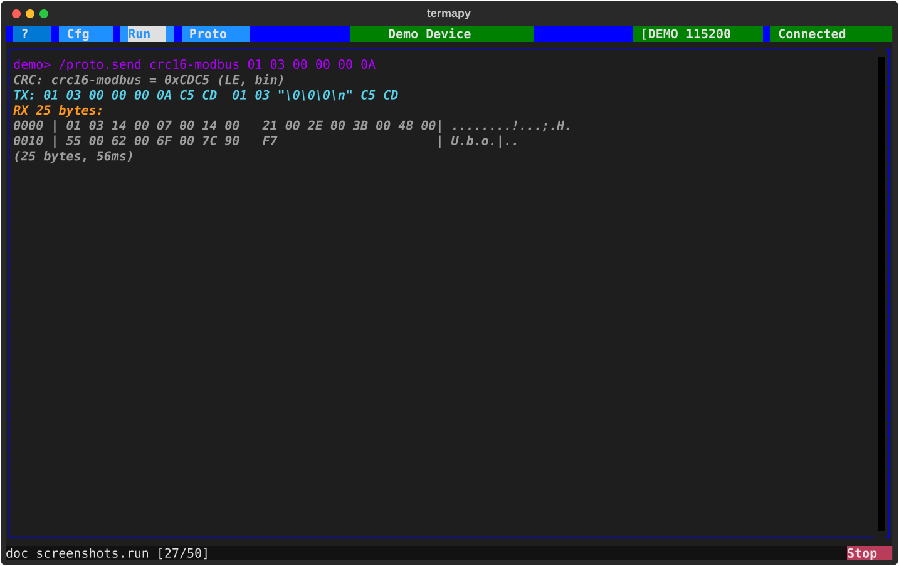
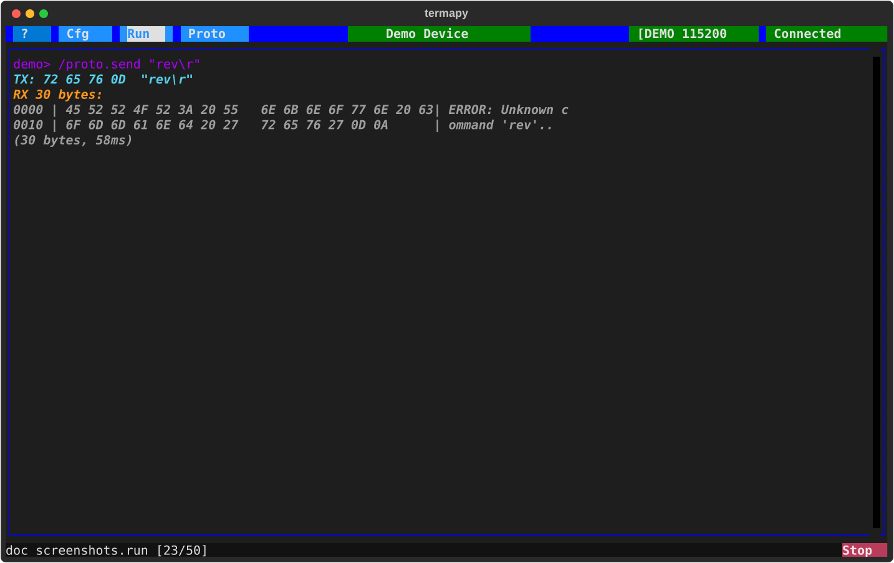
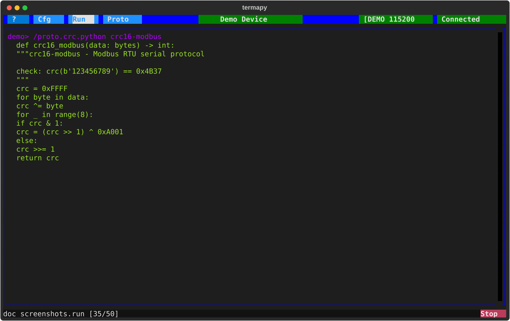

Serial Tools¶
Interactive commands for sending raw bytes, computing CRCs, and inspecting serial data. These are REPL commands you type at the prompt -- no script files needed.
For automated send/expect test scripts, see Protocol Testing.

Send Bytes¶
/proto.send transmits raw bytes and displays the response. No line ending
is appended -- you control exactly what goes on the wire.
Data formats¶
Hex bytes and quoted strings can be mixed freely:
/proto.send 01 03 00 00 00 0A hex bytes
/proto.send "HELLO\r" quoted text (supports \r \n \t \0 \\)
/proto.send 02 "DATA" 03 mix hex and text
/proto.send 0x01 "hello" 0D 0x prefix is optional
Inline delays¶

Insert timing gaps with ~duration between data segments:
/proto.send 00 ~25ms "AT\r" wake byte, 25ms pause, then command
/proto.send "\r" ~5ms "AT+INFO\r" CR to wake, 5ms settle, then query
/proto.send ~500us 01 02 03 delay before first byte
Supported units: us (microseconds), ms (milliseconds), s (seconds).
Timing precision: delays under 1ms use a spin-wait loop for accuracy. Delays >= 1ms use OS sleep. Sub- 2 millisecond delays are best-effort due to USB frame timing (~1ms boundaries on Full Speed USB).
CRC append¶

If the first word matches a CRC algorithm name, the CRC is computed over the data and appended automatically:
/proto.send crc16-modbus 01 03 00 00 00 0A append Modbus CRC (LE)
/proto.send crc16-modbus_be 01 03 00 00 00 0A big-endian CRC
/proto.send crc16-modbus_ascii 01 03 00 00 00 0A CRC as hex text (e.g. "C5CD")
Suffixes: _le (little-endian, default), _be (big-endian), _ascii
(CRC appended as hex text instead of binary bytes).
When combined with delays, CRC is computed on all data bytes concatenated (delays are excluded from the CRC calculation).
Response display¶

Both TX and RX show hex bytes and a smart text representation:
Packets longer than 16 bytes use a multi-line hex dump with ASCII sidebar. Round-trip timing includes all inline delays.
Hex Display Mode¶
Toggle hex display for all serial I/O with /proto.hex on / /proto.hex off.
CRC Algorithms¶
62 named CRC algorithms are built in covering CRC-8, CRC-16, and CRC-32 families (Modbus, XMODEM, CCITT, USB, and more).
REPL commands:
/proto.crc.list- show all 62 algorithms/proto.crc.list *modbus*- filter by pattern/proto.crc.help crc16-modbus- show algorithm parameters/proto.crc.calc crc16-modbus 01 03 00 00 00 0A- compute CRC
Aliases: crc16m = crc16-modbus, crc16x = crc16-xmodem.
In format specs and /proto.send, CRC algorithm names accept suffixes:
_le (little-endian, default), _be (big-endian), _ascii (hex text).
CRC Code Generation¶

Generate a standalone CRC function in C, Python, or Rust for any algorithm in the catalogue. Two implementations available:
/proto.crc.python crc16-modbus bit-by-bit (small, no tables)
/proto.crc.python crc16-modbus --table table-driven (fast, 256-entry lookup)
/proto.crc.c crc16-xmodem C bit-by-bit
/proto.crc.c crc16-xmodem --table C table-driven
/proto.crc.rust crc32 Rust bit-by-bit
/proto.crc.rust crc32 --table Rust table-driven
Bit-by-bit -- compact code, zero RAM overhead. Best for microcontrollers with limited memory (PIC, ATtiny).
Table-driven (--table) -- 4-8x faster. Pre-computes a
256-entry lookup table. Uses 256-1024 bytes of RAM depending
on CRC width.
All algorithm parameters (polynomial, init, reflect, xorout) are baked into the generated code. Copy-paste into your firmware or test script.
NOTE: Currently only the generated Python code is test-verified against all 62 catalogue check values (both bit-by-bit and table-driven). C and Rust output is structurally correct but not compiled/verified by the test suite.
Custom CRC plugins for non-standard checksums: